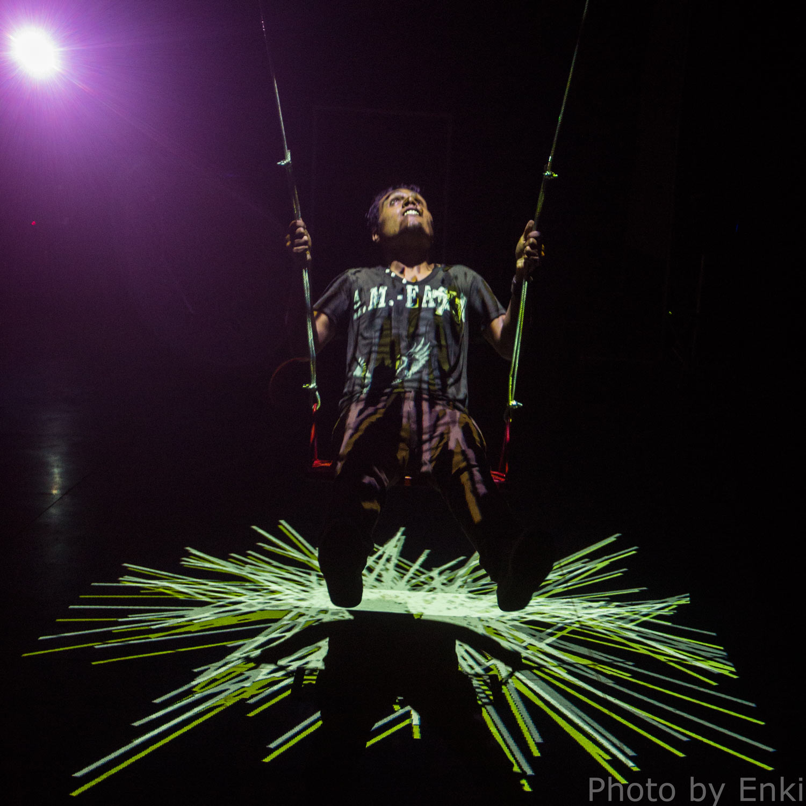
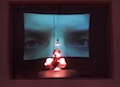
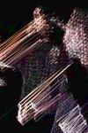

people doing strange things with electricity
This dorkbot-nyc meeting took place at 7pm on Wednesday, December 4th, 2013 at ThoughtWorks. Thanks, ThoughtWorks (via Andrew McWilliams)!
+++++++
It featured the chronomentrophobic ramblings of:
 Chris Jordan: swings
Chris will be presenting two different kinetic light art installations over the past 4 months involving swings. The first is titled Silo Swing, a public art installation commissioned by Flint Public Art Project. The second titled, Momentum, was installed for one week in Guadalajara Mexico, as part of the Monitor Digital festival.
http://www.seej.net/create/2013/07/04/silo-swing/
http://www.seej.net/create/2013/09/25/momentum/ Jessica Feldman: speaking skin
Jessica Feldman is a media artist who started out as a composer and now makes public installations, sound art, and interactive sculptures, often using electricity. Much of her work seeks to subvert fixed relationships among the body, technology, (the) media, and intimate psychological and communal social dynamics revealed by contemporary systems of control, surveillance, and censorship. She will discuss some unfinished/in-process/future dorky projects: an installation involving a building wrapped in transductive, vibrating, speaking skin and an interactive sculpture, which uses hacked circuits and arduino to simulate execution rituals.
www.jessicafeldman.org Andrew McWilliams: The Hardware Explosion
Hardware is shattering into smaller and smaller pieces. We are heading for an Ambient Computing future, where small, specialized personal devices communicate over cloud-based services and sink into the background, hiding complexity and activating only when needed. Andrew McWilliams is a creative technologist exploring this vision through depth video, depth interaction, and most recently, iBeacons. He will give a whirlwind tour, and introduce projects from the weekly hands-on workshop project 'Hardware Hack Lab'.
http://www.jahya.net/
NEXT MEETING: 01 January 2014